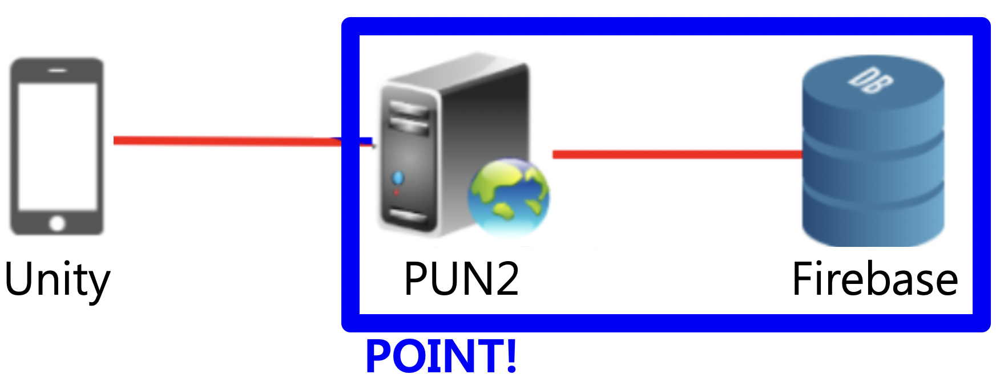
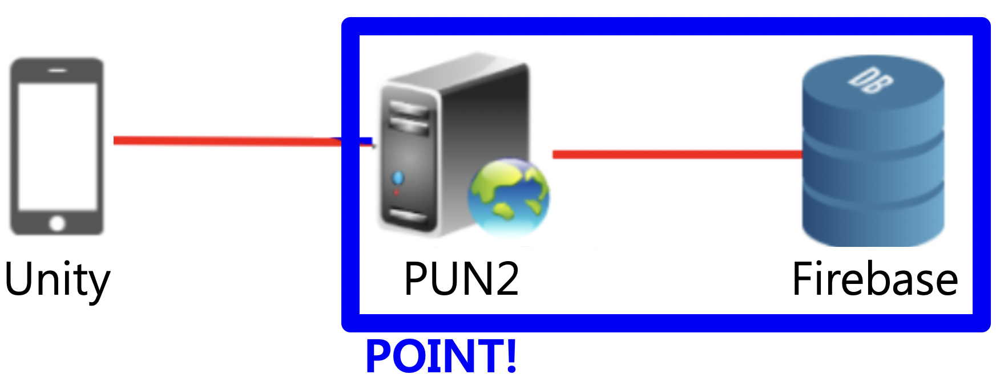

구현 기능

|
총알 발사 기능 ‘Z’키를 누르면 총알이 발사되서 상대의 전투기를 공격할 수 있습니다. |

|
전투기 조종 기능 방향키를 눌러서 전투기를 조종할 수 있습니다. |

|
스테미나 관리 기능 총알을 맞으면 스테미나 게이지가 감소합니다. |

|
로그인 및 회원가입 기능 게임에 로그인 할 수 있고 아직 회원이 아니면 회원가입 할 수 있습니다. |
배경과 목적
요즘 스마트폰 게임 개발 시 Unity를 많이 사용합니다. 이 정도로 Unity는 모바일 게임 개발자들한테 기초 소양이 되었습니다. 또한 요즘 게임들은 다 온라인화 되어 있는 것이 특징입니다. 따라서 게임 개발자가 될 것에 대비해서 기초 소양을 키우기 위해 저만의 온라인 게임을 제작하게 되었습니다.
요즘 스마트폰 게임 개발 시 Unity를 많이 사용합니다. 이 정도로 Unity는 모바일 게임 개발자들한테 기초 소양이 되었습니다. 또한 요즘 게임들은 다 온라인화 되어 있는 것이 특징입니다. 따라서 게임 개발자가 될 것에 대비해서 기초 소양을 키우기 위해 저만의 온라인 게임을 제작하게 되었습니다.
배운 점
- Unity에서 Collision을 처리하는 법과, Collision과 Trigger의 차이를 알게 되었습니다.
- PUN2로 서버를 구축하는 법과 Firebase로 데이터베이스를 구축하는 법을 알게 되었습니다.
진행 절차
- retr0님의 ‘Unity 멀티플레이어 네트워크 게임 한방에 만들기’ 강의를 들으면서 하나씩 따라하였습니다.
- 또한 골드메탈님의 ‘2D 종스크롤 슈팅’ 강의를 2강까지만 들었습니다. 이 후 저만의 ‘온라인 슈팅 게임’을 만들기로 하였습니다.
- 먼저 강의에서 알려준 대로 비행기를 조종하고 총알이 발사되는 기능을 구현하였는데 좌우 버튼을 눌렀을 때 비행기가 시계 방향 또는 시계 반대 방향으로 회전하도록 수정하였고 총알을 맞으면 체력 게이지가 깎이는 기능을 추가로 구현하였습니다.
- PUN2로 서버를 구축하였고 Firebase로 데이터베이스를 구축하였습니다. 그러나 연동 후 프로그램을 실행하자 총알이 벽에 부딪칠 때 아래의 오류 메시지가 떴습니다.
Failed to 'network-remove' GameObject. - 구글에서 찾아본 결과, 네트워크 상에서 객체(GameObject)를 생성하면 플레이어의 공간마다 복제본을 생성하고 객체가 움직이면 복제본도 똑같이 움직입니다. 여기서, 객체를 제거할 때는 객체를 생성한 플레이어만 제거할 수 있다는 룰이 있습니다. 이것을 지키지 않고 무작정 삭제처리를 했기 때문에 오류가 난 것입니다.
- 그래서 객체를 생성한 플레이어 쪽에서 객체를 삭제하도록 수정하자 오류 메시지가 사라졌습니다.
- 이렇게 해서 원하는 프로그램을 구현할 수 있었습니다.
역량 강화를 위해 가장 노력한 점
Photon으로 게임 서버 구축, Firebase로 데이터 저장 기능 구현 및 Unity로 온라인 게임 제작
Photon으로 게임 서버 구축, Firebase로 데이터 저장 기능 구현 및 Unity로 온라인 게임 제작
전체 구조


사용 기술
Unity, Photon, Firebase
Unity, Photon, Firebase
개발 환경
Unity 2020.1.9f1
Unity 2020.1.9f1
부연 설명